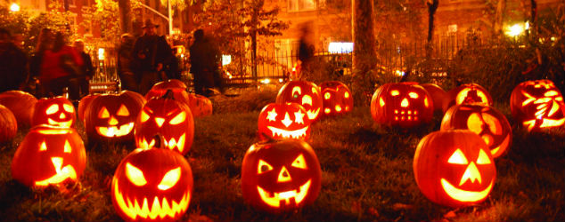
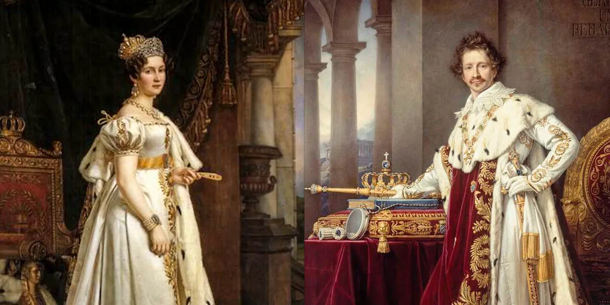
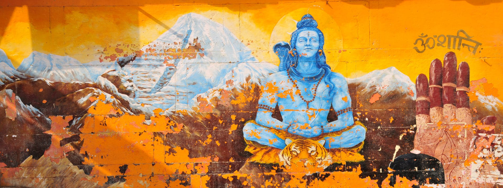
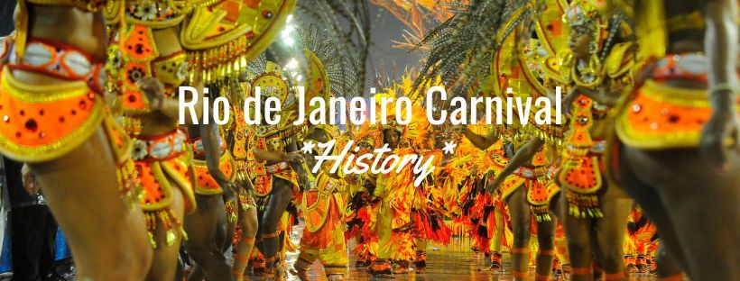

🎃 The Origins of Halloween
Halloween has deep historical roots in the ancient Celtic festival of Samhain (pronounced SAH-win). This festival marked the end of summer and the harvest, and the beginning of winter — a season the Celts often associated with death. Samhain was believed to be a time when the boundary between the worlds of the living and the dead grew thin, allowing spirits to cross over.
🕈 Samhain in Celtic Tradition
-
Celtic: Refers to the Celts and their languages, a branch of the Indo-European family that includes Irish, Scottish Gaelic, Welsh, Breton, Manx, Cornish, and several extinct languages such as Gaulish.
-
Dates:
Originally celebrated from sunset on October 31st to sunset on November 1st. The Celts measured their days from sunset to sunset. -
Purpose:
To mark the transition between seasons and the Celtic New Year. -
Beliefs:
During this liminal time, the veil between worlds was thin, making it easier for spirits to pass through.
🕈 The Shift to Halloween
-
As Christianity spread through Europe, the Catholic Church gradually adapted Samhain into its own calendar. In the 9th century:
- November 1st was established as All Saints’ Day (also called All Hallows’ Day) to honor Christian saints.
- The evening before, October 31st, became known as All Hallows’ Eve, which later evolved into Halloween.
🕈 Traditions That Survived
-
Over time, Halloween blended elements of both Celtic and Christian practices. Today, it is known for:
- Costumes (originally disguises to ward off spirits)
- Trick-or-treating (rooted in old practices of offering food to wandering souls or the poor) Spooky celebrations that echo the ancient themes of death, harvest, and the supernatural.

🍺The History of Oktoberfest
Oktoberfest is the world’s largest folk festival, held each year in Munich, Bavaria, Germany. Its origins go back to 1810, when it was created to celebrate the royal wedding of Crown Prince Ludwig of Bavaria (later King Ludwig I) and Princess Therese von Sachsen-Hildburghausen.
🔸 The First Oktoberfest (1810)
- Dates: October 12 – October 17, 1810
- Occasion: The royal wedding celebration
- Events: A grand feast and a large horse race, organized by a Bavarian National Guard officer named Andreas Michael Dall’Armi.
- Location: The festival took place on a field named Theresienwiese (“Theresa’s Meadow”), in honor of the bride. This area is still the main festival ground today.
🍂Why the Date Changed
Although the first Oktoberfest was held in October, the event was later moved to late September to enjoy better weather. Today it usually runs from September 20th to the first weekend in October.
🐎From Horse Races to Beer Tents
- In the early years, horse races were the main attraction.
- Over time, new traditions such as large beer tents, carnival rides, parades, and agricultural shows became the focus.
- Horse races were officially discontinued in 1960, though they are occasionally brought back for special anniversary celebrations.
🎡Oktoberfest Today
Today, Oktoberfest is a global cultural event attracting millions of visitors from around the world. While beer is a big part of the celebration, it is also about music, traditional Bavarian costumes (lederhosen and dirndls), folk dances, food, and funfair attractions.

🪔 The Festival of Lights: Diwali
Diwali, also known as the Festival of Lights, is one of the most important and widely celebrated festivals in India and across the world. Its name comes from the Sanskrit word “Deepavali”, meaning “a row of lights.” Although its exact origins are not known, Diwali is believed to have developed from ancient harvest festivals celebrated thousands of years ago. Over time, it has become a festival filled with stories, traditions, and celebrations that highlight the victory of light over darkness, good over evil, and knowledge over ignorance.📅 When is Diwali Celebrated?
-
The festival falls between October and November, based on the Hindu lunar calendar.
Diwali lasts for five days, each with its own customs and rituals:
- Dhanteras – the festival begins with buying precious items (gold, silver, utensils) for good fortune.
- Naraka Chaturdashi (Choti Diwali) – commemorates the defeat of the demon Narakasura.
- Diwali (Lakshmi Pujan) – the main day, dedicated to worshipping Goddess Lakshmi, the goddess of wealth and prosperity.
- Govardhan Puja – celebrates the story of Lord Krishna lifting Govardhan Hill to protect villagers from a storm.
- Bhai Duj – honors the bond between brothers and sisters.
🔹 Origins and Stories of Diwali
Diwali’s meaning and celebrations vary across regions and religions, but all highlight hope, renewal, and victory of light.-
Ancient Harvest Festival
- Early Diwali celebrations may have been linked to the end of the harvest season, when communities gave thanks for the year’s crops and prayed for prosperity.
-
Hindu Traditions
- North India: Celebrates the return of Lord Rama, his wife Sita, and brother Lakshmana to Ayodhya after 14 years in exile, and Rama’s victory over the demon king Ravana.
- South India: Marks the victory of Lord Krishna over the demon Narakasura.
- Western India: Linked to Lord Vishnu, who banished the demon king Bali to the netherworld.
-
Other Traditions:
- Some also associate Diwali with the birth of Goddess Lakshmi during the cosmic event of Samudra Manthan (churning of the ocean).
-
Sikh Traditions
- For Sikhs, Diwali is celebrated as Bandi Chhor Divas (“Day of Liberation”), marking the release of the sixth Sikh Guru, Guru Hargobind Ji, along with 52 imprisoned princes.
-
Jain Traditions
- Jains observe Diwali as the day that Lord Mahavira, the 24th Tirthankara, attained Nirvana (spiritual liberation).
🧿 Diwali Today
- Homes, temples, and streets are decorated with oil lamps (diyas), candles, and colorful lights.
- Families exchange gifts and sweets, light firecrackers, and perform rituals to invite blessings for health, wealth, and happiness.
- Across cultures, Diwali remains a festival of joy, unity, and new beginnings.

🌙 Ramadan and Eid al-Fitr
- Ramadan and Eid al-Fitr are two of the most significant observances in Islam, deeply connected to faith, reflection, and community.
- Ramadan is the ninth month of the Islamic calendar and is observed by Muslims worldwide through fasting from dawn to sunset each day.
- Eid al-Fitr, which means “Festival of Breaking the Fast,” is the joyful celebration that marks the end of Ramadan. It is a time of prayer, gratitude, charity, and feasting.
📖 The Religious Significance of Ramadan
- Ramadan is more than just abstaining from food and drink — it is a spiritual journey of self-discipline, reflection, and closeness to God (Allah).
🔹 Fasting in the Quran
- One of the key verses about fasting is found in Surah Al-Baqarah 2:183:
- “O you who believe! Fasting is prescribed for you as it was prescribed for those before you, that you may attain piety (taqwa).”
- Taqwa (piety) in Islam means developing mindfulness of God, living with awareness of right and wrong, and striving to avoid sinful behavior.
- Thus, fasting is not only about physical self-control, but also about building spiritual strength and moral character.
🔹 Daily Life During Ramadan
-
- Suhur: A pre-dawn meal before the fast begins.
- Fasting (Sawm): No eating, drinking, smoking, or sinful acts from sunrise to sunset.
- Iftar: The evening meal to break the fast, traditionally starting with dates and water, followed by a shared meal.
- Taraweeh prayers: Special nightly prayers performed in mosques.
- Acts of Charity (Zakat and Sadaqah): Helping those in need is especially emphasized.
🔹 Eid al-Fitr: The Festival of Breaking the Fast
-
When the new moon is sighted at the end of Ramadan, Muslims celebrate Eid al-Fitr.
Key traditions include:
- Special Eid prayer in congregation at mosques or open fields.
- Zakat al-Fitr (charity donation), ensuring everyone can join in the celebrations.
- Visiting family and friends, exchanging greetings of “Eid Mubarak” (Blessed Eid).
- Feasting with traditional foods and sweets, marking the joy of completing the month of fasting.
🧿 The Meaning of Ramadan and Eid al-Fitr
- Together, Ramadan and Eid al-Fitr represent:
- Discipline and devotion (through fasting and prayer).
- Community and compassion (through charity and gatherings).
- Gratitude and renewal (celebrating blessings with joy and humility).

🎭 Rio Carnival
- The Rio Carnival is often called “the biggest party on Earth.” It is a world-famous festival held every year in Rio de Janeiro, Brazil, attracting millions of people with its colorful parades, lively music, dazzling costumes, and joyful street parties.
📅 Dates of Rio Carnival 2025
-
- Feb 28 (Fri): Carnival officially begins (Friday before Ash Wednesday).
- Mar 2 (Sun): Samba school parades begin at the Sambadrome, Rio’s most famous parade arena.
- Mar 5 (Wed): Ash Wednesday – Carnival officially ends at midday.
- Mar 8 (Sat): Parade of Champions – the final grand event where the best samba schools perform again.
🌍 Origins of Rio Carnival
-
- 🔹 Entrudo: Portuguese Roots Carnival in Brazil traces back to Entrudo, a Portuguese pre-Lent festival. Entrudo was full of costumes, mischief, symbolic cleansing rituals, and community feasting before the solemn season of Lent.
- 🔹 Cultural Blending in Brazil When Entrudo came to Brazil, it blended with Indigenous customs and African traditions, adding new rhythms, dances, and music. This cultural fusion transformed the festival into something uniquely Brazilian.
🥁 Samba and Afro-Brazilian Culture
- Samba, Brazil’s most iconic dance and music style, is at the heart of Rio Carnival. Its Afro-Brazilian roots gave the celebration its rhythm, energy, and identity. A key historical figure, Aunt Siata, played an important role in promoting samba in Rio and connecting it with Carnival traditions.
🔹 Evolution into a Global Spectacle
- By the 20th century, Rio Carnival had grown into an organized and spectacular event. Samba schools (neighborhood-based performance groups) began to compete with elaborate parades featuring floats, costumes, and storytelling through dance and music. Today, the Sambadrome parades are the highlight, broadcast worldwide and drawing visitors from every continent.
🧿 Meaning of Rio Carnival
- At its core, Rio Carnival is about:
- Celebration before Lent (a joyful release before a time of reflection).
- Cultural identity, showcasing Brazil’s rich blend of European, Indigenous, and African traditions.
- Community and creativity, where neighborhoods come together to create parades.
- Global recognition, symbolizing Brazil’s culture to the world.

🧧 Chinese New Year (Spring Festival)
- Chinese New Year, also known as the Spring Festival, marks the beginning of a new year on the traditional lunisolar Chinese calendar.
- It is the most important celebration in China and has been observed for over 3,500 years.
📜 Historical Origins
-
- Shang Dynasty (1600–1046 BC): The earliest roots of the festival come from agricultural rituals and sacrificial ceremonies honoring gods and ancestors at the year’s start and end.
- Han Dynasty (202 BC – 220 AD): The date of the New Year was officially established according to the lunar calendar.
- Agricultural Roots: As the Spring Festival, it also celebrated the end of winter and the hope of a prosperous harvest.
🐉 The Legend of Nian
- According to Chinese mythology:
- Long ago, a fierce monster named Nian lived in the mountains.
- Every New Year’s Eve, Nian would attack villages, destroying homes, livestock, and crops.
- Villagers discovered Nian feared loud noises, bright lights, and the color red.
- To protect themselves, they:
-
- 🎆 Lit firecrackers
- 🏮 Hung red lanterns and banners
- 🥁 Banged drums and gongs
- These traditions became part of the festival, symbolizing the banishment of bad luck and the inviting of good fortune.
🎉 Modern Celebrations
- Today, Chinese New Year is celebrated with a mix of ancient customs and modern festivities:
- Family Reunions: Families gather for the New Year’s Eve dinner, one of the most important meals of the year.
- Red Envelopes (Hongbao): Elders give children red envelopes filled with money as a symbol of blessing and prosperity.
- Decorations: Homes are adorned with red couplets, lanterns, and paper cuttings.
- Fireworks & Lion Dances: Still used to chase away evil spirits and welcome joy.
- Zodiac Animals: Each year is associated with one of the 12 zodiac animals (Rat, Ox, Tiger, etc.), shaping the year’s symbolism.
🧿 Meaning of Chinese New Year
Chinese New Year is about:
- Honoring ancestors and family traditions.
- Welcoming spring and new beginnings.
- Celebrating unity, luck, and prosperity.
- It blends ancient mythology, agricultural traditions, and cultural values into one of the world’s most widely celebrated festivals.

🇮🇳 Armed Forces Flag Day
- Armed Forces Flag Day is observed every year on 7th December in India. It is a day dedicated to honoring the Indian Army, Navy, and Air Force — the brave men and women who safeguard the nation and often put their lives on the line for its security.
📜 Origins of Armed Forces Flag Day
- The observance began in 1949, shortly after India’s independence.
- Leaders realized that beyond recognition, soldiers, veterans, and the families of martyrs also needed active support and care.
- The government declared 7th December as the official day to raise funds for the welfare of:
- 🪖 War veterans
- 🎖 Serving personnel
- 👨👩👧 Families of martyrs
- 🎗 Symbols and Traditions
- People wear a special badge: a striped flag in red (Army), dark blue (Navy), and light blue (Air Force).
- These badges serve as a visible token of respect and a way to raise awareness.
- Fundraising drives are organized across schools, offices, and public spaces to collect contributions for the Armed Forces Flag Day Fund.
🔹 Celebrations & Activities
- Schools and colleges often host events, inviting veterans to share their real-life stories of courage and sacrifice.
- Social media campaigns spread tributes using hashtags like #ArmedForcesFlagDay, encouraging young people to participate.
- Citizens across the country contribute donations, symbolizing unity and gratitude toward the armed forces.
🧿 Significance
- Armed Forces Flag Day is more than just a ceremonial event.
- It is:
- A reminder of the sacrifices made by soldiers and their families.
- A call for citizens to give back through donations and active support.
- A symbol of national pride, unity, and responsibility toward those who defend the nation.